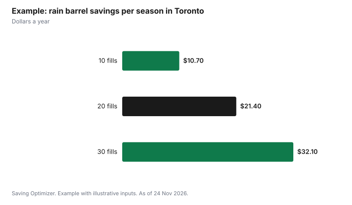

Utilities · Canada
Rain Barrels and Outdoor Water Saves for Canadian Municipal Bills

A rain barrel saves money slowly. A 220 L barrel holds 0.22 cubic metres, worth about $1.07 at Toronto's 2026 water rate. Buy through a city sale with a subsidy, use it often, and pair it with cheaper habits like watering early and mulching.
Key takeaways
- Grey 220 L barrel: $75 at a RainBarrel.ca city sale (checked 24 Nov 2026).
- Guelph pays a $40 subsidy per barrel, up to two per household.
- Toronto's 2026 water rate: $4.8629 per cubic metre.
- Each full barrel used saves about $1.07 in Toronto.
- Empty and store the barrel before freeze-up.
Is a rain barrel worth it?
| Barrel cost | Fills per season | Years to pay back |
|---|---|---|
| $75 | 10 | About 7 |
| $75 | 20 | About 3.5 |
| $35 after a $40 subsidy | 20 | About 1.6 |
Cheaper outdoor water saves
- Water early in the morning to cut evaporation.
- Mulch beds to keep moisture in.
- Use a trigger nozzle on the hose.
- Fix dripping outdoor taps.
- Follow your city's watering bylaw.

Winter care
Empty the barrel, disconnect it and store it upside down before the first hard freeze. Put the downspout back so water drains away from the foundation.
Season savings: an example
Example: 20 fills in a season is 4.4 cubic metres. At $4.8629, that saves about $21.40 a year.
See the Toronto water bill explained, water filter costs and cutting home costs.
Sources
- City of Toronto, Water rates and fees (2026 metric rates), checked 24 Nov 2026.
- RainBarrel.ca, City of Guelph rain barrel sale, checked 24 Nov 2026.
Frequently asked questions
How much does a rain barrel cost in Canada?
A grey 220 L barrel was $75 at a RainBarrel.ca city sale when checked on 24 Nov 2026.
Are there rain barrel rebates?
Some cities subsidize them; Guelph offers $40 per barrel, up to two.
How much does a rain barrel save?
About $1.07 per full barrel used at Toronto's 2026 rate.
Can I leave a rain barrel out in winter?
No. Empty and store it before freeze-up.
Is rain barrel water safe to drink?
No. Use it for gardens.
Researched and drafted with AI assistance and fact-checked against official Canadian sources. How we create content.
Note: Amounts are examples. Rates vary by city. Education only.